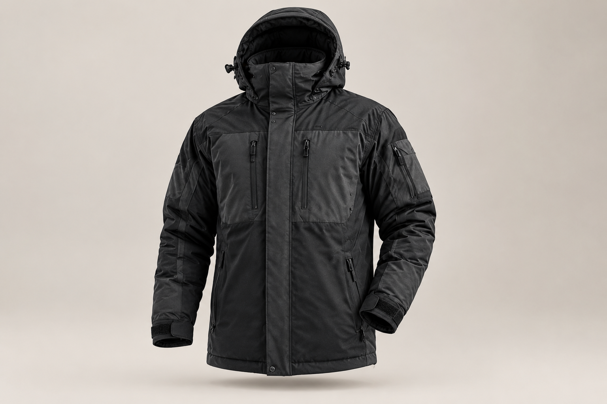
EXTREME-WEATHER JACKET STILLimages/extreme-jacket-still.jpg
Exploring premium technical outerwear through AI-generated product imagery, fabric studies, on-model styling, and cinematic campaign visuals.
Concept campaign · 2026The collection explores two distinct outerwear directions: a protective expedition jacket for severe winter conditions, and a lighter technical layer designed for everyday movement. Both are original fictional concepts created for this portfolio project.

EXTREME-WEATHER JACKET STILLA sculpted protective silhouette, substantial insulation, and a restrained technical finish for severe winter conditions.
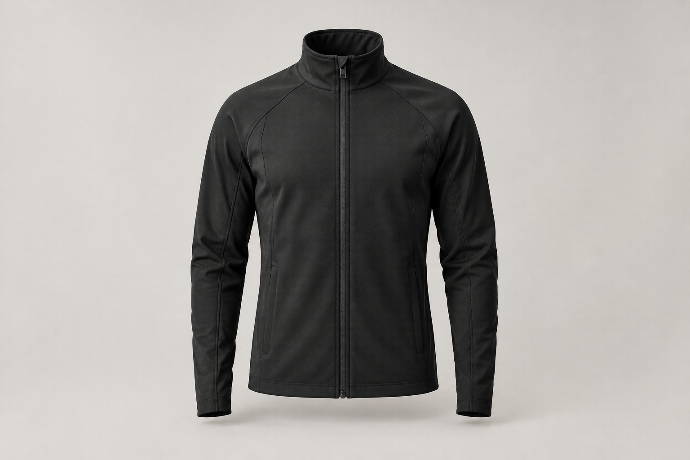
LIGHTWEIGHT JACKET STILLA clean, versatile layer focused on ease of movement, a refined fit, and understated everyday performance.
Slow vertical-axis rotations reveal each jacket's overall silhouette and construction. These short product films are designed to complement the on-model campaign imagery.
A rotating product view highlighting the jacket's silhouette and technical design details.
A lighter outerwear concept presented through a clean, controlled rotation.
Material presentation is an important part of technical apparel storytelling. These close-ups focus on surface, texture, and the visual language of each fictional garment.
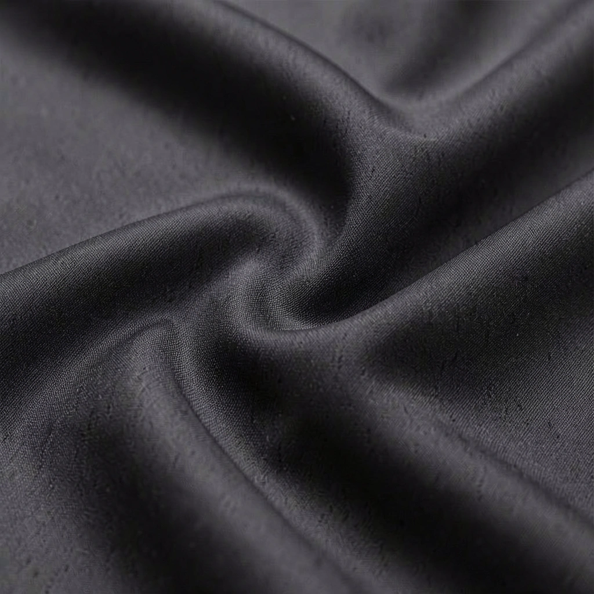
LIGHTWEIGHT FABRIC DETAILA close-up study of the lighter jacket's surface and texture.
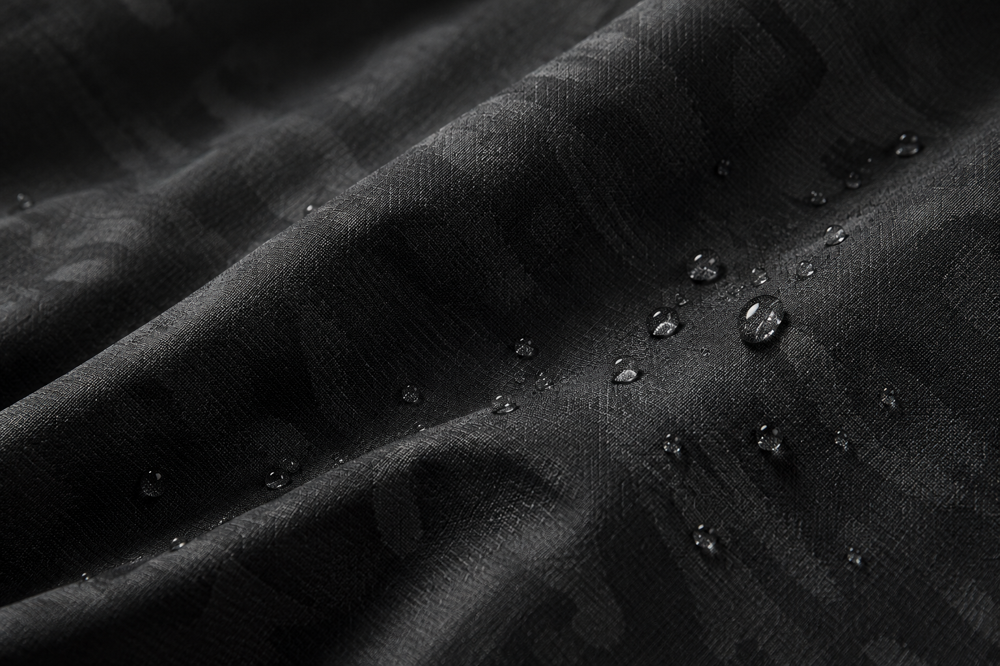
WATER-REPELLENT FABRIC DETAILA visual study of the winter jacket's technical surface. The image illustrates appearance, not laboratory-tested performance.
The same fictional outerwear concepts are explored on male and female models, moving from a neutral product presentation to outdoor and training-inspired campaign scenes.
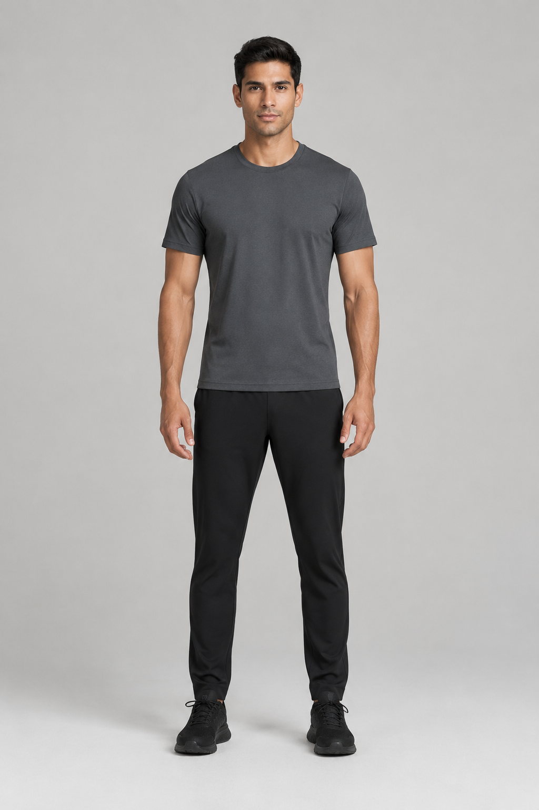
MALE MODEL — BEFOREA neutral starting image for the outfit-change workflow.
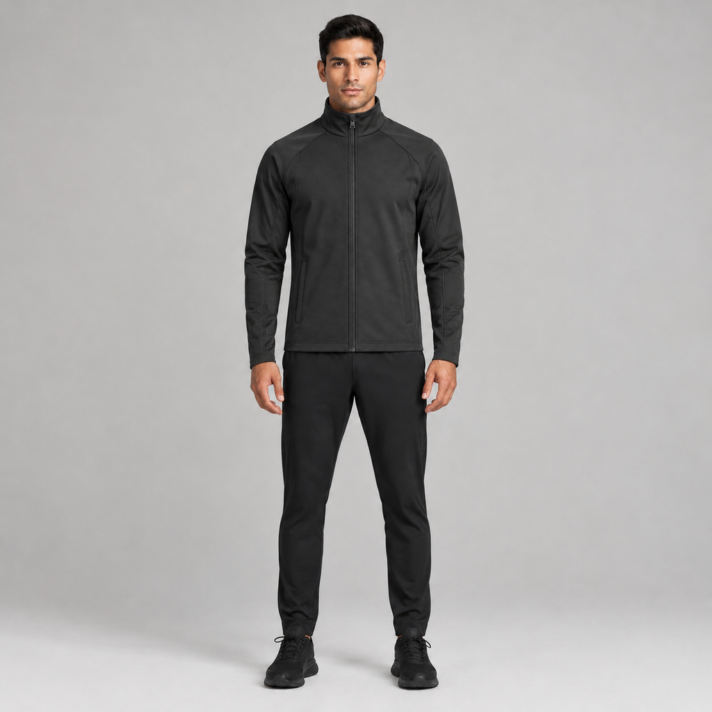
MALE MODEL — JACKET APPLIEDThe outfit-change result with the selected jacket concept.
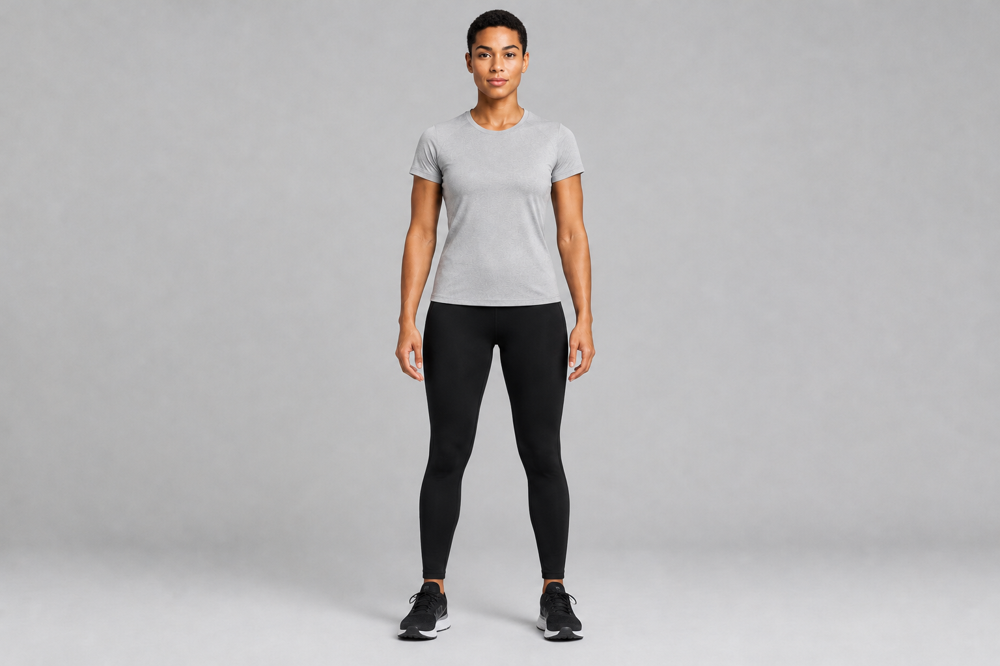
FEMALE MODEL — BEFOREA separate reference used to explore the concept on a second model.
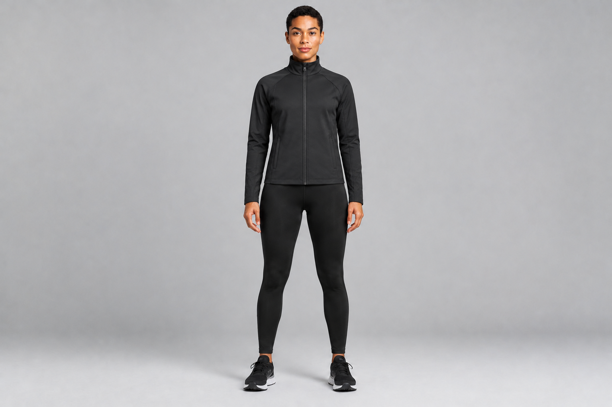
FEMALE MODEL — JACKET APPLIEDA second on-model interpretation of the fictional outerwear design.
Campaign variations place the outerwear in different contexts. The aim is to explore how a consistent product concept can support outdoor, urban, and training-focused creative directions.
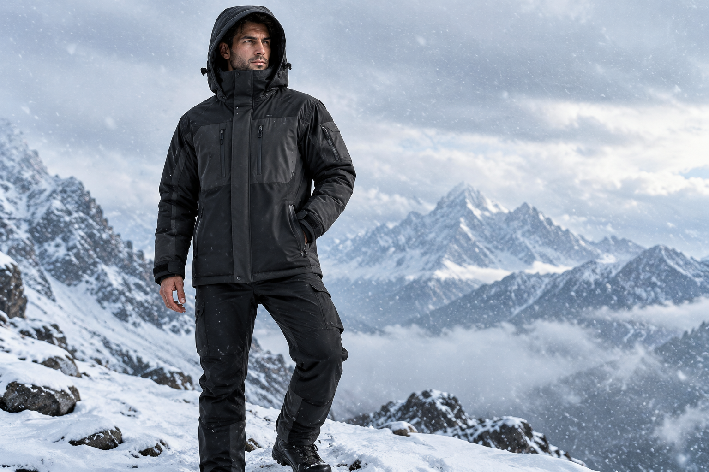
HERO IMAGEimages/hero-model-snow.jpgA model wearing the winter jacket in a snow-covered mountain environment.
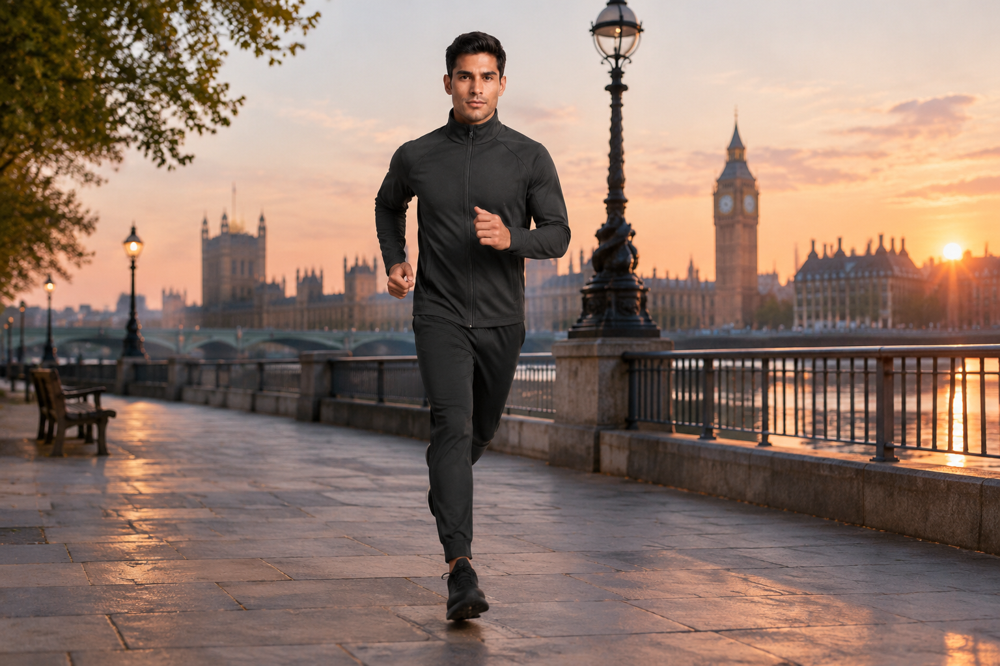
MALE MODEL RUNNING AT DAWNA city-running concept exploring technical outerwear in an urban setting.
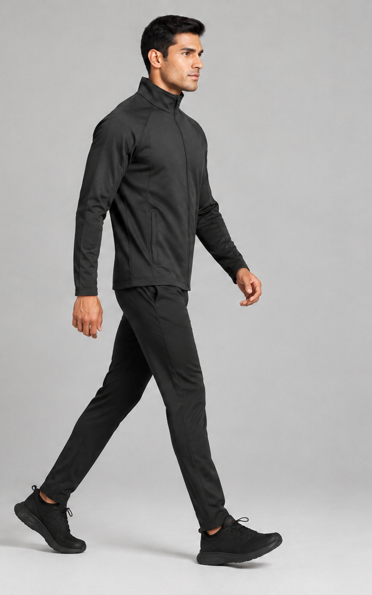
MALE MODEL — WALKING SCENEA calm, refined look focused on fit and silhouette.
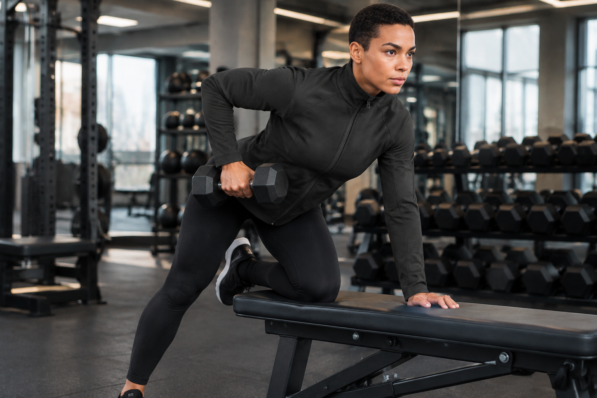
FEMALE MODEL — GYM SCENEA premium gym setting that expands the concept beyond outdoor winter scenes.
My approach combines AI-assisted image and video creation with an understanding of textile materials, garment construction, and careful visual presentation.
Define the garment direction, intended environment, styling, and visual tone before generating campaign assets.
Create product stills, material studies, and on-model imagery. Review silhouette, colour, texture, and visible construction details.
Develop motion and scene variations, then edit and present selected outputs as a coherent visual story.
This fictional concept explores how AI-generated stills, product visualisation, and short-form motion can support premium performance-wear storytelling. It is an independent creative study and is not an official campaign for a real brand.